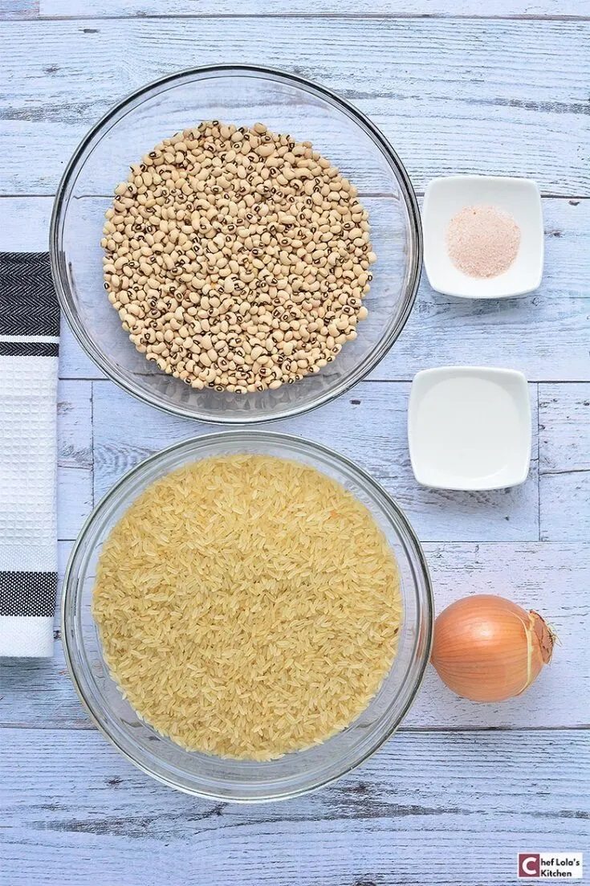
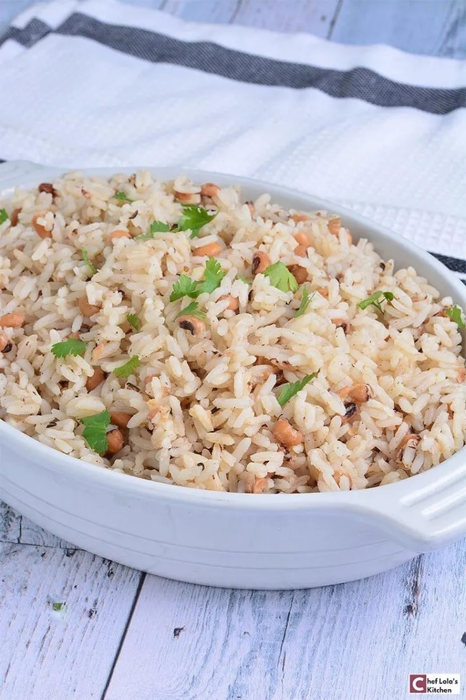
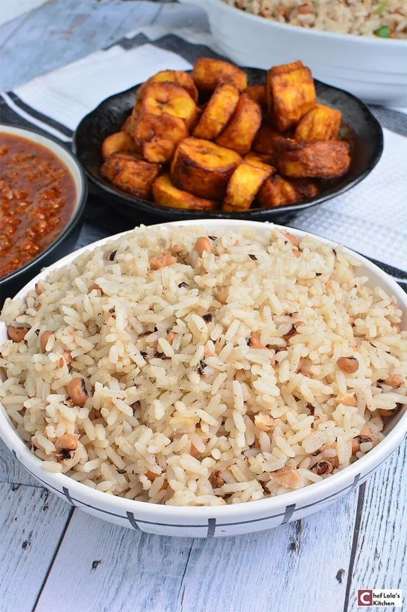
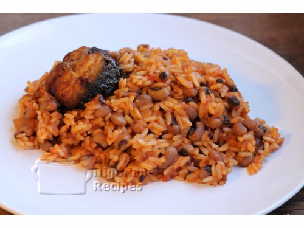

Rice and Beans recipe
About the food
Rice and beans are a classic combination. As the name implies, it’s rice cooked together with beans. It’s inexpensive, nutritious, and goes with just about any meal.
Nigerian rice and beans recipe is a Nigerian staple food that is simple, delicious, and very easy to cook.Rice and beans is a staple food in many cultures, and in Nigeria, it is a favorite for kids and adults; this classic meal is not complete without stews and sauces like Ata din-din, Chicken stew, fish stew, or beef stew.
Ingredients
| S/N | Ingredients | Measurement |
|---|---|---|
| 1 | long grain parboiled rice | 500grams |
| 2 | black eyed beans | 250grams |
| 3 | chopped medium sized onion | 2 |
| 4 | ground crayfish | 2 tablespoon |
| 5 | stock cubes | 2 |
| 6 | thyme | 1 teaspoon |
| 7 | Pepper | 1 teaspoon |
| 8 | salt | 1/2 teaspoon |
| 9 | tomato stew | 500grams |
| 10 | Meat/chicken stock(optional) | 250grams |
Steps to prepare the meal
- Wash and soak the beans for about 5 hours. Discard the water and rinse the beans.
- Put the beans in a pot, pour some water and set to boil.
- Once the beans starts boiling, turn off the heat, throw away the water and wash again.
- Prepare the tomato stew.
- Parboil the rice
- Cook the beans till tender and set aside.
- Pour the chicken/fish stock into a pot big enough to accommodate the rice and beans, bearing in mind that the rice will rise some more
- Add the tomato stew, the parboiled rice and the cooked beans. Check that the water level is just less than the level of the rice and beans.
- Add pepper and salt to taste.
- Stir, cover the pot and cook at low to medium heat till the water is dry.
-

Uncooked rice and beans
step 1
-

rice and beans
type 1
-

cooked rice and beans with stew
type 3
-
jollof rice and beans
type 4
-

jollof rice and beans
type 5